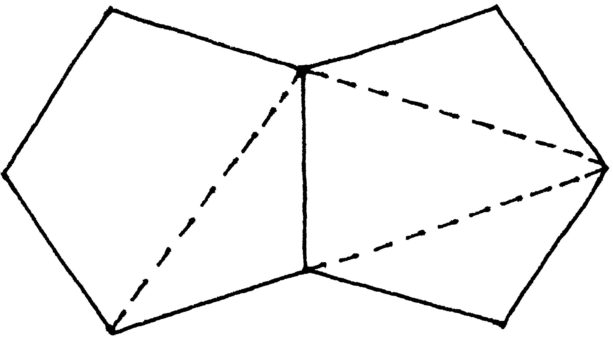
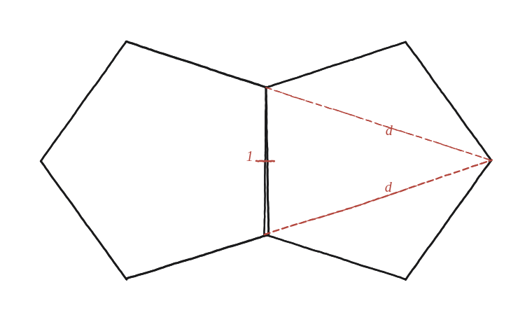

Fes servir aquesta configuració de dos pentàgons per donar una demostració alternativa que la diagonal compleix d² = d + 1.

La mateixa identitat, un altre camí
La identitat d²=d+1 (amb d=φ, la raó diagonal/costat d'un pentàgon regular) es pot demostrar per trigonometria. Aquí es demana una via alternativa: arribar-hi directament d'un dibuix, sense cap sinus ni cosinus, només amb semblança de triangles.
El triangle que amaguen dos pentàgons units
Dos pentàgons regulars de costat 1 comparteixen una aresta sencera. Des dels dos extrems d'aquesta aresta compartida surt una diagonal cap a un mateix vèrtex llunyà d'un dels dos pentàgons. Aquestes dues diagonals, més l'aresta compartida, formen un triangle isòsceles: base 1 (l'aresta), i els altres dos costats d (dues diagonals de pentàgon).

Els angles d'aquest triangle: 72°, 72°, 36°
Aquest triangle —dos vèrtexs adjacents d'un pentàgon (units per un costat) i el vèrtex oposat (unit a cadascun per una diagonal)— és exactament el mateix tipus de triangle que ja va aparèixer a la Qüestió 31: allà es va demostrar que els dos triangles laterals grans del pentagrama, no etiquetats, són idèntics per simetria de mirall. Aplicant el mateix recompte d'angles que allà (marcant sistemàticament els 108° i 36° que es repeteixen per tot el pentagrama), aquest triangle resulta tenir 72° a cada extrem de la base i 36° al vèrtex llunyà.
El triangle partit per la seva pròpia bisectriu
Tracem ara la bisectriu d'un dels angles de 72° (a un extrem de l'aresta). Aquesta bisectriu talla el costat oposat —una de les diagonals, de llargada d— en un punt intern, creant un triangle petit nou. Aquest triangle petit resulta ser isòsceles ell mateix, amb dos costats iguals a la base original (1). El punt de tall parteix la diagonal en dos trossos: el que va del punt de tall fins al vèrtex llunyà fa exactament 1, i per tant l'altre —el que va del punt de tall fins a l'extrem de l'aresta compartida— fa d−1.
El triangle petit té els mateixos tres angles que el gran (72°, 72°, 36°), només que "girats" de posició: són semblants. Comparant els costats que es corresponen als mateixos angles: el costat oposat a l'angle de 36° al triangle gran és la base (1); al petit, és el tros (d−1). El costat oposat a un angle de 72° al gran és d; al petit, és 1. La proporció de semblança dona, doncs: d/1 = 1/(d−1).
Desenvolupant la relació
d/1 = 1/(d−1) → d(d−1)=1 → d²−d=1 → d²=d+1. Exactament la identitat que es volia demostrar, arribada-hi sense cap trigonometria: només angles, bisectrius i semblança de triangles.
d²=d+1, demostrat sense trigonometria: el triangle isòsceles que formen dos pentàgons units (base 1, costats d, angles 72°-72°-36°) es parteix amb la seva pròpia bisectriu en un triangle petit semblant al gran, i la proporció de semblança —d/1=1/(d−1)— desenvolupada dona directament la identitat.
Comprovació
d/1=1/(d−1) → d(d−1)=1 → d²−d=1 → d²=d+1. Amb d=φ≈1,618: φ²≈2,618, i φ+1≈2,618, coincidint.